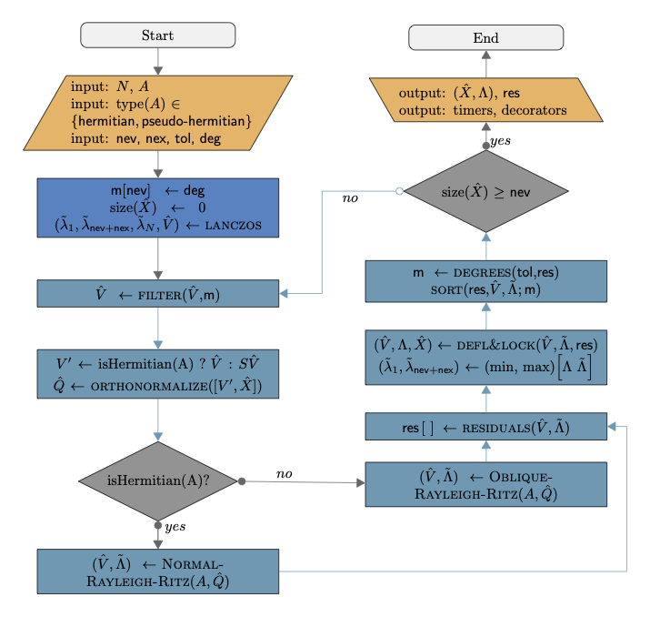

ChASE: an Iterative Solver for Dense Eigenproblems
Overview
The Chebyshev Accelerated Subspace Eigensolver (ChASE) is a modern and scalable library to solve two types of dense algebraic eigenvalue problems:
Hermitian (Symmetric) eigenvalue problems of the form
\[A \hat{x} = \lambda \hat{x} \quad \textrm{with} \quad A^\dagger=A \in \mathbb{C}^{n\times n}\ \ (A^T=A \in \mathbb{R}^{n\times n}),\]where \(\hat{x} \in \mathbb{C}^{n}\backslash \{0\}\) and \(\lambda \in \mathbb{R}\) are the eigenvector and the eigenvalue of \(A\), respectively.
Pseudo-Hermitian eigenvalue problems, for example from Bethe-Salpeter Equation (BSE). The Hamiltonian \(H\) derived from the BSE equation is of the form
\[\begin{split}H := \begin{bmatrix} A & B\\ -\bar{B} & -\bar{A} \end{bmatrix} \quad \textrm{with} \quad A = A^* \quad \textrm{and} \quad B = B^T.\end{split}\]The \(m \times m\) blocks \(A\) and \(B\) are respectively referred to as resonant and coupling terms. The two blocks \(\bar{A}\) and \(\bar{B}\) stand for the conjugate of \(A\) and \(B\). Because of the properties of \(A\) and \(B\) stated above, \(\bar{A} = A^T\) and \(\bar{B} = B^*\), and the size of \(H\) is \(n := 2m\). The Hamiltonian \(H\) is termed a pseudo-Hermitian matrix, as it satisfies the relation
\[\begin{split}SH = H^*S \quad \textrm{with} \quad S := \begin{bmatrix} I & 0 \\ 0 & -I \end{bmatrix}.\end{split}\]
Algorithm
{kind=link}
\(A, N\) |
The Hermitian matrix and corresponding rank. |
nev,nex |
Number of desired eigenpairs, Extra size of search space |
tol,deg |
Threshold of residual’s tolerance, initial degree of Chebyshev polynomials |
\(\hat{V},\hat{Q},\hat{X}\) |
Matrix of vectors: filtered, orthonormalized, deflated and locked |
\(\tilde{\Lambda},\Lambda\) |
Matrix of eigenvalues: computed, deflated and locked |
\(m[],\textsf{res}[]\) |
Vectors: optimized degrees, eigenpairs residuals |
FILTER |
Chebyshev polynomial filter aligning \(\hat{V}\) to the desired eigenspace |
ORTHONORMALIZE |
QR factorization orthogonalizing filtered vectors together with deflated ones |
NORMAL-RAYLEIGH-RITZ |
Projection of \(A\) into search space defined by \(\hat{Q}\) and diagonalization of reduced problem |
OBLIQUE-RAYLEIGH-RITZ |
Projection of \(H\) into search space defined by \(\hat{Q}\) and diagonalization of reduced problem |
DEFL&LOCK |
Deflation and locking of eigenpairs whose residuals are below the tolerance threshold |
DEGREES |
Computation of optimal polynomial degree for each vector in \(\hat{V}\) |
Use Case and Features
Real and Complex: ChASE is templated for real and complex numbers. So it can be used to solve real symmetric eigenproblems as well as complex Hermitian ones.
Eigespectrum: ChASE algorithm is designed to solve for the extremal portion of the eigenspectrum (i.e., \(\{\lambda_1, \dots ,\lambda_\textsf{nev}\}\)). By default it computes the lowest portion of the spectrum but it can compute as well the largest portion by solving for \(-A\). The library is particularly efficient when no more than 20% of the extremal portion of the eigenspectrum is sought after. For larger fractions the subspace iteration algorithm may struggle to be competitive. Converge could become an issue for fractions close to or larger than 50%.
Type of Problem: ChASE can currently handle only standard eigenvalue problems. Generalized eigenvalue problems of the form \(A\hat{x} = \lambda B \hat{x}\), with \(B\) s.p.d., can be solved after factorizing \(B = L L^T\) and transforming the problem into standard form \(A = L^{-1} A L^{-T}\).
Sequences: ChASE is particularly efficient when dealing with sequences of eigenvalue problems, where the eigenvectors solving for one problem can be use as input to accelerate the solution of the next one.
Vectors input: Since it is based on subspace iteration, ChASE can receive as input a matrix of vector \(\hat{V}\) equal to the number of desired eigenvalues. ChASE can experience substantial speed-ups when \(\hat{V}\) contains some information about the sought after eigenvectors.
Degree optimization: For a fixed accuracy level, ChASE can optimize the degree of the Chebyshev polynomial filter so as to minimize the number of FLOPs necessary to reach convergence.
Precision: ChASE is also templated to work in Single Precision (SP) or Double Precision (DP).